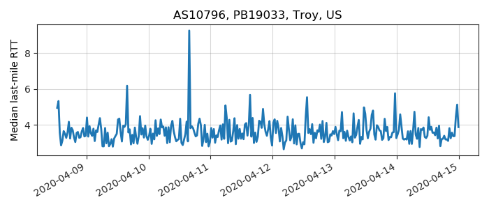
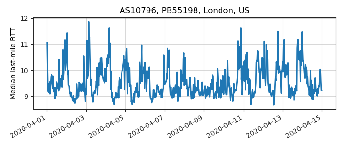

---
layout: default
title: Last-mile delay survey / 2020-04-01 / AS10796
---
AS10796, TWC-10796-MIDWEST, US
Summary
- Daily last-mile fluctuations: low
- Number of probes: 26
- APNIC eyeball rank: 83
- Daily fluctuations: True
- Main frequency: 0.0417
- Average peak-to-peak amplitude: 0.82ms
Aggregated last-mile queuing delay
Periodogram
24H profile
Probes' last-mile RTT
- 

- 